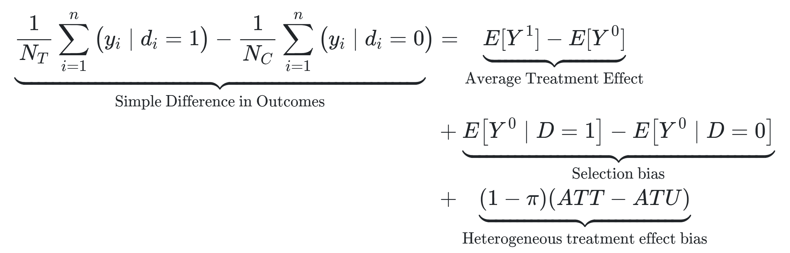

This article, the second one of the series about the book Causal Inference: The Mixtape, is all about the Potential Outcomes notation and how it enables us to tackle causality questions and understand key concepts in this field.
The central idea of this notation is the comparison between 2 states of the world:
The actual state: the outcomes observed in the data given the real value taken by some treatment variable. For example, the quarterly sales of a company given that they did some marketing campaign.
The counterfactual state: what would have happened if the treatment variable had taken another value. For example, the quarterly sales of the company if the marketing campaign had not been carried out.
The causal effect of an intervention (in this case, the marketing campaign) is the difference in the outcome variable between these two states. Thus, to calculate it, it would suffice to do a subtraction between them… but we can’t actually do that because the counterfactual value is hypothetical and unknown. Counterfactuals don’t really exist because as soon as one of the possible scenarios materializes, then all the other potential outcomes disappear.
In the company example, when the marketing campaign is carried out, it is no longer possible to know how much would have been the sales if the campaign had been ditched. We can have hypotheses or guesses, but we will never know for sure the counterfactual value for this individual company.
The good news is that by having data for many companies (and when some special conditions are met) we can still get a reasonable estimate for the average effect of a generic marketing campaign over that group of companies.
Now let’s translate these concepts into the potential outcomes notation.
Potential outcomes notation
First, we define the variable \(D_i\), which represents if the unit \(i\) receives the treatment or not. In the previous example, this variable will take the value 1 if the company \(i\) executes the marketing campaign and 0 if not.
Then we define the variable \(Y_i\), which represents the outcome of interest for the unit \(i\) (let’s say, the quarterly sales of the company \(i\)).
This outcome variable can also have a superindex, which usually takes values 0 or 1 and indicates to which value of \(D\) is the outcome associated. In our example, the superindex tells us if the outcome (sales) corresponds to a world where the company \(i\) implemented the marketing campaign (\(Y_i^1\)) or to one where it didn’t (\(Y_i^0\)).
It’s important to note that the superindex by itself does not tell us if the outcome is actual or counterfactual. To know if an outcome is counterfactual or not, we need an additional piece of notation:
\[
Y_i^1|D_i=0
\]
Now this expression is interpreted as “the sales of the company \(i\) in the world where the marketing campaign is carried out, conditional on the fact that it did not actually implement the campaign”.
In other words, the superindex denotes a hypothetical scenario for \(Y_i\), and what comes after \(|\) indicates what really happened with the unit \(i\). If these two values match, then the whole expression is a real outcome, and if they’re different, it’s a counterfactual outcome (and therefore, it’s unknown).
The previous idea can be summarized through the so-called switching equation:
\[
Y_i = D_iY_i^1+(1-D_i)Y_i^0
\]
Which can be better understood with this meme:
The key idea here is that, in the real world, we only know the actual outcome (\(Y_i\)), which is the materialization of one of the potential outcomes (\(Y_i^1, Y_i^0\)) based on the value taken by \(D_i\): if \(D_i=1\), then \(1-D_i=0\) and the equation collapses to \(Y_i=Y_i^1\) (and vice versa when \(D_i=0\)).
Thus, the non-materialized potential outcome is relegated to be a counterfactual (i.e. a fictional concept in our imagination).
Using all the notation we’ve already defined, we can also define the causal effect of the marketing campaign for the company \(i\) (that is, the difference between the sales if the campaign had been carried out and the sales if it hadn’t).
\[
\delta_i=Y_i^1-Y_i^0
\]
As we only see one of the two potential outcomes for the unit \(i\), the value \(\delta_i\) is unobservable. Note also that the subindex \(i\) tells us that this causal effect can be different for other units (in general, \(\delta_i\ne\delta_j\)).
Average effects: ATE y ATT
Despite not being able to know the treatment effects for each unit \(i\), under some circumstances we can estimate average effects for a group of units.
There are different names for these average effects, depending on which group of units we are referring to. The most relevant ones are:
- Average Treatment Effect (ATE): It’s the average of the effects on all the units in our analysis.
\[
\begin{aligned}
ATE &= E[\delta_i]\\
&= E[Y_i^1 - Y_i^0]\\
&= E[Y_i^1]-E[Y_i^0]
\end{aligned}
\]
- Average Treatment Effect on the Treated (ATT): Similar to the ATE, but only considering the units that actually received the treatment (\(|D_i=1\)).
\[
\begin{aligned}
ATT &= E[\delta_i|D_i=1]\\
&= E[Y_i^1 - Y_i^0|D_i=1]\\
&= E[Y_i^1|D_i=1]-E[Y_i^0|D_i=1]
\end{aligned}
\]
We must remember that even though some units did receive the treatment, they still have (conceptually) a potential outcome without treatment (\(Y_i^0\)). Besides, since the effects \(\delta_i\) can be different between units (and usually they are), more often than not the ATE and ATT will have different values too.
Something problematic here is that the ATE and ATT are still functions of counterfactual terms, and therefore unobservable and impossible to calculate. But we previously had said that, under some circumstances, we could estimate them. Which are these circumstances?
To explain it, we must introduce a new expression that can be calculated: the simple difference in outcomes.
Simple difference in outcomes (SDO)
Despite the relevance of potential outcomes, the only values we can truly observe in the real world are:
In the context of the previous example, this would mean to observe:
A statistic that can be easily obtained using this data is the difference in average sales between the companies that carried out a marketing campaign and those that did not. This statistic is called the Simple Difference in Outcomes, or SDO, and can be expressed as follows using the potential outcomes notation:
\[
E[Y^1|D=1] - E[Y^0|D=0]
\]
And it can be calculated by using the following formula (where \(N_T\) is the number companies with \(D_i=1\) and \(N_C\) is the number of companies with \(D_i=0\)).
\[
\frac{1}{N_T} \sum_{i=1}^n(yi|d_i=1)-\frac{1}{N_C}\sum_{i=1}^{n}(y_i|d_i=0)
\]
We can see that this expression only contains actual outcomes (observables). Therefore, it can be calculated.
However, we intuitively know that attributing causal meaning to this metric is wrong. For instance, it’s likely that companies with a big enough budget to implement a marketing campaign are larger companies, and therefore, they would have had bigger sales even if they didn’t have implemented the campaign.
This intuition is reflected in the simple difference in outcomes decomposition:

What this decomposition tells us is that the SDO is composed of the sum of three expressions:
Our precious, the Average Treatment Effect.
Two nasty biases: the selection bias (the difference in average sales between groups of companies if none of them would have implemented the marketing campaign) and the heterogeneus treatment effect bias (the difference in average \(\delta_i\) between groups of companies).
This decomposition is demonstrated in the book, and it is the “technical” explanation of why the SDO usually doesn’t have a proper causal meaning: selection bias and heterogenous effect bias lead to the SDO being different from the ATE.
The decomposition gives us good and bad news. The good news is that now we have an easy to calculate statistic (the SDO) which technically contains the ATE. The bad news is that in order to “extract” the ATE from the SDO, we need information that we don’t have (since the expressions for the biases contain counterfactual outcomes).
Given this, the light of hope that causal inference offers us is to develop strategies so that, in the data collected, the biases are negligible, and thus making it possible to use the SDO as an estimator of the ATE.
In the own words of Scott Cunningham (author of the book):
“One could argue that the entire enterprise of causal inference is about developing a reasonable strategy for negating the role that selection bias is playing in estimated causal effects.”
The independence assumption (and the effectiveness of randomization)
OK, so we want to retrieve unbiased estimates for the average effects, such as the ATE, and we know that most of the time, the SDO isn’t a good estimator for those due to the biases we’ve just talked about. But what is the reason why these biases do appear in the SDO?
Biases (of selection and heterogeneous effect) appear when the treatment assignment (\(D_i\)) is not independent of the potential outcomes.
For example, when we say something like “companies with a big enough budget to implement a marketing campaign are larger companies, and therefore, they would have had bigger sales even if they didn’t have implemented the campaign”, what we are really saying, in the language of potential outcomes, is that \(D\) depends on \(Y^0\): companies with higher values for \(Y^0\) are more likely to have a value of \(D\) equal to 1.
From the above, it follows that when there is independence between treatment assignment and potential outcomes (\((Y^1,Y^0)\mathrel{\unicode{x2AEB}}D\)), then the SDO is, in fact, a good estimator for the ATE! (it’s unbiased).

The bad news is that this rarely happens in real life.

As a general rule, whenever the variable \(D\) is being freely chosen by human beings, there will be dependence between \(D\) and the potential outcomes üòµ.
Although we are not homo economicus who make their decisions with perfect information (we don’t know the exact value of the potential outcomes), we do collect information about the available options and their expected outcomes, and we make decisions that we believe will benefit us based on that limited information. This is enough so that such decisions (that is, the \(D\) values) are not independent of the potential outcomes.
In the words of Scott Cunningham: “Rational choice is always pushing against the independence assumption”.
One of the exceptions to this is randomization, precisely because there is no free choice by agents on it. Since we assign values of \(D\) randomly to each unit, we impose independence between those values and the potential outcomes. Thus, the SDO in randomized trials is usually enough to estimate unbiased causal effects.
Your feedback is welcome! You can send me comments about this article to my email.